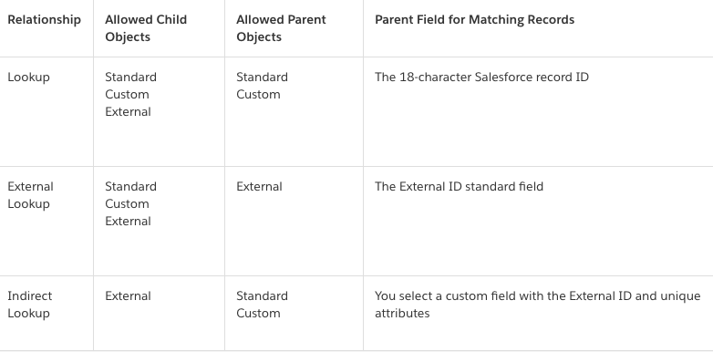
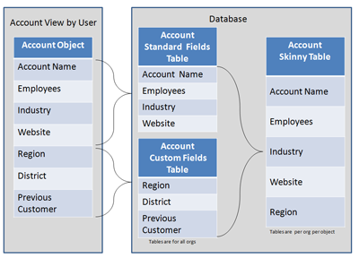

Designing data model to build scalability in from the get-go
Data Skews - Account Data Skew
Too may child records associated with the same parent object Account
Set of unassigned Contacts parked under one Account record named Unassigned.
This creates:
Record Locking
System uses record-level database locking to preserve the integrity of data during the updates
Updating a large number of Contacts under the same Account occurs in multiple threads
For each update, the system (property of Tranactional Database) locks both the Contact being changed and its parent Account
to maintain integrity in the database.
This is to prevent prevent inconsistencies,
such as updating a child record whose parent has just been deleted in another thread
Even though each lock is held for a very short time, because all the updates are trying to lock the same Account,
there’s a high risk an update will fail because a previous one is still holding the lock on the account.
Customers who are experiencing a small number of locking errors might be able to handle the problem by adding retry logic to their integration code. Customers who experience frequent locking from integrations and mass updates should sequence batches so that the same records are not updated in multiple threads simultaneously.
Sharing Issues:
Example: Changing the owner of an Account record,
system may need to examine every one of the Account’s child records and adjust their sharing, as well
- Recalculating the role hierarchy and sharing rules
If number of child records involved are in the order of 100Ks, this will take quite bit of time!
Data Skews - Ownership Skew
Ownership Skew:
Every record in Salesforce required to have an owner
Single user owning large number (100Ks) of records (called skewed owner) of same type (say Account) -
due to sharing calculations needed to manage the visibility of those records
When a skewed owner exists in the role hierarchy, for operations like: deletes or owner updates:
System must remove sharing from the old owner (this user)
and all parent users (users above this user) within the role hierarchy,
and from all users given access by sharing rules
That’s why ownership changes tend to be one of the most costly transactional changes in the system.
In some cases an ownership skew simply can’t be avoided. In these cases, it’s best to ensure the skewed owner
doesn’t have a role.
That way, you take the user and their records away from the role hierarchy (Role hierarchy isolation) and its associated sharing rules.
Data Skews - Lookup Skew
When a very large number of records (100Ks) are associated with a single record in the
lookup object (the object you’re searching against)
Lookup fields can be placed any object in Salesforce, lookup skew can create problems for any object
within your organization.
Lookup fields in Salesforce are Foreign-key (FK) relationship between objects
Everytime a record is inserted or updated, system needs to lock the record it is pointing-to (by FK) to
ensure database integrity
If the lock is held for a long time due to custom code, system will throw lock-exception which willl lead
to insert/update failure
Look for objects with large large number of records and requiring heavy concurrent insert and update activities
Use of External Objects
Data-tiering strategy:
Data is spread across multiple objects and external data stores
So no need to bring the data into Salesforce
Bring the data into Salesforce on demand from external data store
This avoids storing large amount of data in Salesforce and LDV issues
External Objects are similar to Custom objects but they map data that is stored in an external data store
External Objects enables users and system to search and interact with the external data in its current state
An external data source specifies how to access an external system.
Salesforce Connect uses external data sources to access data that's stored outside your Salesforce organization. Files Connect uses external data sources to access third-party content systems.
External Objects Lookups
External objects support standard lookup relationships via 18-char Salesforce RecordID
associate related records
Data stored outside Saleforce org often does not have those RecordIDs, so we have 2 type of
lookup relationship avaiable:
External Lookups:
Parent is an external object
External lookup links a child (Standard, Custom, another External Object) to parent External object
Indirect Lookups:
When the external data doesn’t include Salesforce RecordIDs
Links a child external object to parent (Standard, Custom) object.

Skinny Tables
For each object table, Salesforce maintains separate tables at the database level for standard and custom fields.
This separation ordinarily requires a join when a query contains both kinds of fields.
Most useful with tables containing millions of records to improve the performance of read-only operations, such as reports.

Skinny Tables 2
Skinny tables aren’t a magic wand to wave at performance problems. There’s overhead in maintaining separate tables
that hold copies of live data. Using them in an inappropriate context can lead to performance degradation instead of improvement.
Skinny tables can contain a maximum of 100 columns.
Skinny tables can’t contain fields from other objects.
For Full sandboxes: Skinny tables are copied to your Full sandbox orgs.
For other types of sandboxes: Skinny tables aren’t copied to your sandbox organizations. To have production skinny tables activated
for sandbox types other than Full sandboxes, contact Salesforce Customer Support.